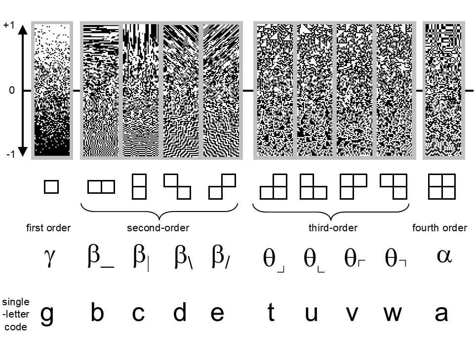
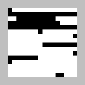
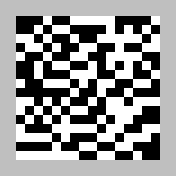
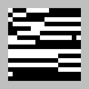
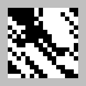
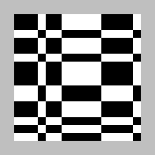
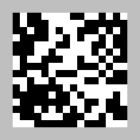

Domains
Binary texture domain
The binary texture domain is a structured domain of synthetic visual textures, introduced in Victor and Conte (2012) Local image statistics: maximum-entropy constructions and perceptual salience. Journal of the Optical Society of America A, 29, 1313-1345. References illustrating their use in psychophysical, neurophysiological, and computational studies are here.
Textures consist of black and white checks, whose arrangements are specified by ten local image statistics. The statistics are grouped by order:
- \(\gamma\), the first-order statistic, which specifies the overall fraction of white vs. black checks
- \(\beta\), four second-order statistics, which specify the probability that a check matches its neighbor horizontally or vertically, or along the diagonals
- \(\theta\), four third-order statistics, which specify the probability that there is an even vs. odd number of white checks in triangular clusters
- \(alpha\), the fourth-order statistic, which specifies the probability that there is an even vs. odd number of white checks in 2x2 square clusters
Together, these ten statistics determine the probability of all 2x2 blocks of checks, and the textures they generate are maximum-entropy subject to those constraints. Each of these statistics range from -1 to 1, and when all ten are zero, the resulting texture is random.

Stimuli are named according to the values of the specified coordinates, using the above single-letter codes, followed by 'p' for positive or 'm' for negative, followed by four digits indicating the coordinate magnitude. 'rand' indicates the random texture. Examples, along with samples of the corresponding textures, are shown below.






Stimulus coordinates are 10-element vectors, in the btc_specoords and btc_augcoords fields of the stimulus metadata structure. In the btc_specoords field, the un-specified coordinates are indicated as NaN. In the btc_augcoords field, these NaN values are replaced by the coordinate values determined by maximum entropy. Algorithms for generating these textures and further details may be found in Victor and Conte (2012).
In dataset structures that hold representational space coordinates for this domain
- the
stimulus metadata structurefield elements 'typenames{k}' are given by the above strings, e.g., 'bp0900' - the
stimulus metadata structurefields 'btc_specoords' and 'btc_augcoords' hold the stimulus coordinates described above - the
set metadata structurefield 'paradigm_type' is 'btc' and 'paradigm_name' indicates the coordinates that are explored in the stimulus set.
Sample coordinate files and setup metadata files can be found in samples/bwtextures.
Animal domain
The animal domain is an unstructured domain of 37 common animals, introduced in Waraich, S.A., and Victor, J.D. (2022) A psychophysics paradigm for the collection and analysis of similarity judgments. J. Vis. Exp. (181), e63461, doi:10.3791/63461 (2022) and used in Waraich, S.A., and Victor, J.D. (2024) The geometry of low- and high-level perceptual spaces. J. Neurosci. 44(4):e1460232023.
Each of these animals can be rendered in any of five ways, to create five paradigms, varying in the extent to which the original animal is recognizable. Paradigm names are 'texture','intermediate_texture','intermediate_object','image','word' (the 'texture' rendering is fully texturized and unrecognizable; the 'image' paradigm is the original image, in 'word', the image is replaced by the name of the animal). Examples are shown below.
In dataset structures that hold representational space coordinates for this domain
- the
stimulus metadata structurefield elements 'typenames{k}' are the names of the animals, e.g., 'dog' - the
set metadata structurefield 'paradigm_type' is 'animals' and 'paradigm_name' indicates the rendering.
Several sample coordinate files can be found in samples/animals. There is no setup metadata.

Example domains
Cars
This is a demonstration of a generic unstructured domain.
Demos: rs_read_coorddata_demo_cars to create a dataset structure from a coordinate file; rs_disp_coordsets_demo_cars to display the representational space.
In the dataset structures created by this demo, set metadata structure field 'paradigm_type' is 'transport' and 'paradigm_name' is 'cars'. Note that the coordinates in the sample coordinate file (in demos/cars_coords_*.mat) are random.
Opposites
This is a demonstration of a generic structured domain (with stimulus coordinates).
Demos: rs_read_coorddata_demo_opposites to create dataset structures from coordinate files and from a quadratic form model; rs_disp_coordsets_demo_opposites to display the representational space.
This demo also shows how to specify the stimulus coordinates via opts_read.type_coords (see 'opposite_coords' in rs_read_coorddata_demo_opposites).
In the dataset structures created by this demo, set metadata structure fields 'paradigm_type' and 'paradigm_name' are both 'opposites'. The coordinates in the sample coordinate files (in demos/opposites_coords_*.mat) are randomly jittered around the stimulus coordinates, then randomly rotated.
MPI faces domain
This is a structured domain that corresponds to the stimuli in Ebner, N. C., Riediger, M., & Lindenberger, U. (2010). FACES—A database of facial expressions in young, middle-aged, and older women and men: Development and validation. Behavior Research Methods, 42, 351-362. doi:10.3758/BRM.42.1.351.
The faces in this dataset vary according to individual identity, age range, gender, emotional expression, and database set. These are encoded into the names of the jpeg files in the database and the stimulus coordinates
as follows, using the file '132_y_f_n_b.jpg' as an example
- age range ('y': young, 'm': middle-age, 'o': old; 'y' in '132_y_f_n_b.jpg') encoded as 1, 2, or 3 in btc_specoords(:,1)
- gender ('f': female, 'm': male; 'f' in '132_y_f_n_b.jpg') encoded as 1 or 2 in btc_specoords(:,2)
- database set ('a' or 'b'; 'b' in '132_y_f_n_b.jpg') encoded as 0.2 or 0.4 in btc_specoords(:,3)
- emotional expression ('n': neutral, 'a': angry, 's': sad, 'd': disgust, 'f': fear, 'h': happy; 'n' in '132_y_f_n_b.jpg`) encoded as a one-hot in btc_specoords(:,4:9)
- identity ('132' in '132_y_f_n_b.jpg') encoded as a one-hot in btc_specoords(:,10:end)
In dataset structures that hold representational space coordinates for this domain
- the
stimulus metadata structurefield elements 'typenames{k}' are strings corresponding to the JPEG file name in the above database, e.g., '132_y_f_n_b' - the
stimulus metadata structurefield 'btc_specoords' holds the stimulus coordinates described above - the
set metadata structurefield 'paradigm_type' is 'faces' and 'paradigm_name' is free text that indicates the selection of stimuli, with final characters 'bw' for gray-level and 'fc' for full-color
A sample coordinate file and setup metadata file can be found in samples/faces.